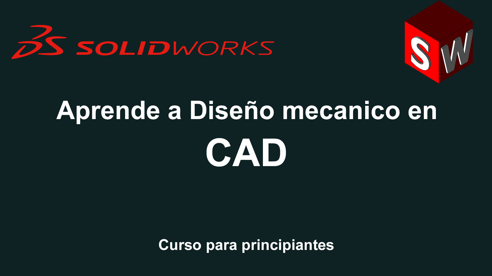

📘 Objetivo del Curso
Este curso está diseñado para enseñarte el uso avanzado de SolidWorks, un software líder en diseño mecánico 3D. Aprenderás a crear piezas, ensamblajes y generar planos técnicos, dominando las herramientas esenciales y avanzadas de SolidWorks para optimizar tu proceso de diseño.
📚 Contenido del Curso
- 🔹 Introducción a SolidWorks y su interfaz.
- 🔹 Modelado de piezas en 3D: extrusión, revolución, barrido y loft.
- 🔹 Diseño de ensamblajes y manejo de relaciones.
- 🔹 Generación de planos técnicos y listas de materiales (BOM).
- 🔹 Simulación de esfuerzos y análisis de movimiento.
- 🔹 Técnicas avanzadas: superficies complejas y creación de moldes.
⏳ Duración del Curso
Clases teóricas y prácticas, con una duración total de aproximadamente 40 horas, distribuidas en módulos semanales.
✅ Requisitos Previos
- 💻 Computadora con SolidWorks instalado (versión recomendada 2021 o superior).
- 📘 Conocimientos básicos de diseño mecánico (aunque no es indispensable).